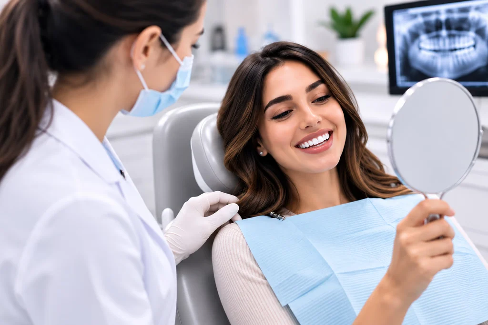
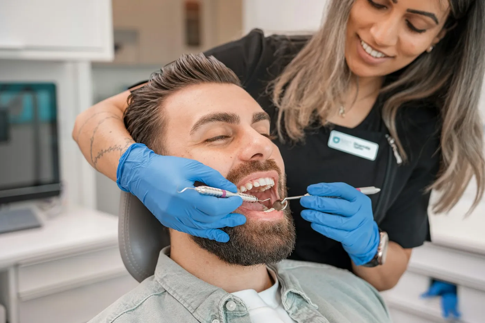
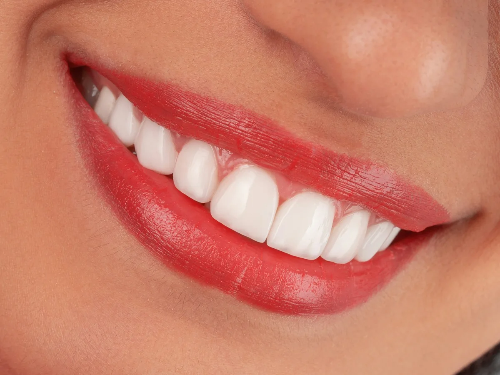
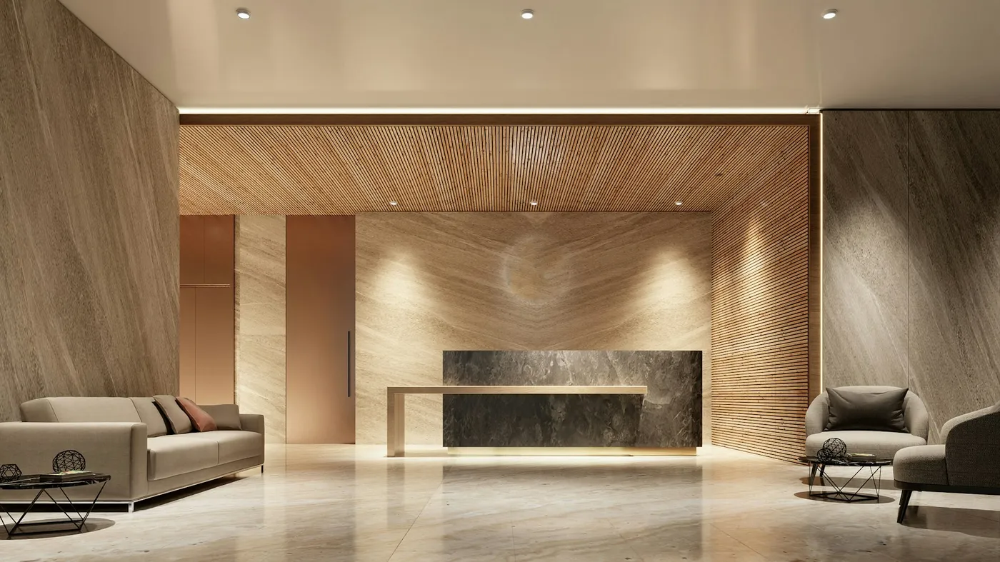

Simulação ilustrativa
Simulação ilustrativa
Clareamento dental
Mais claro, sem perder o natural.
Técnica de consultório, caseira ou a combinação das duas, com controle de sensibilidade em cada etapa.
De duas a quatro semanasAgendar

Sorrisus Prime, odontologia avançada nos Jardins
Planejamento digital, mãos experientes e uma casa pensada para você se sentir bem desde a porta.

Quem cuida do seu sorriso
Cirurgiã-dentista. Implantodontia e reabilitação oral estética.
Há mais de quinze anos a Dra. Marina devolve função e confiança a sorrisos que pareciam sem saída. Cada caso começa com escuta, passa por um planejamento digital completo e só depois chega à cadeira.
Um bom tratamento não se nota. A pessoa só volta a sorrir sem pensar nisso.
Casos unitários, protocolos fixos e enxertos, com cirurgia guiada por computador.
Lentes de contato dental, facetas e clareamento, desenhados junto com o paciente.
Professora convidada em cursos de atualização para dentistas.

A diferença
Da restauração simples à reabilitação completa, todo tratamento começa entendendo o que incomoda você e o que os seus dentes precisam. A técnica vem depois.
Tratamentos
Da restauração do dia a dia à transformação completa do sorriso. Arraste a linha das fotos e compare o antes e o depois.
Simulação ilustrativa
Mais claro, sem perder o natural.
Técnica de consultório, caseira ou a combinação das duas, com controle de sensibilidade em cada etapa.

Dentes no lugar, quase sem ninguém perceber.
Alinhadores transparentes e aparelhos estéticos, com simulação digital do movimento do primeiro ao último dia.

 Simulação ilustrativa
Simulação ilustrativa
Pequenos ajustes, grande diferença.
Restaurações em resina, recontorno e gengivoplastia para alinhar proporções e deixar o sorriso inteiro em harmonia.

O cuidado que mantém tudo de pé.
Limpeza, prevenção, tratamento de canal e restaurações, com a mesma atenção dada aos casos mais complexos.

Raiz nova, firmeza de dente natural.
Cirurgia guiada a partir da tomografia, com o implante posicionado no milímetro planejado. Coroas em cerâmica feitas para a sua cor de dente.

 Simulação ilustrativa
Simulação ilustrativa
Finas como uma lente, desenhadas para o seu rosto.
Lâminas de porcelana que corrigem forma, cor e pequenos espaços com desgaste mínimo ou nenhum. O desenho é aprovado por você antes.

Equilíbrio entre sorriso e rosto.
Toxina botulínica, preenchimentos e bioestimuladores em doses moderadas, para quem quer parecer descansado e não diferente.
Estrutura e experiência
Arraste a página e percorra os ambientes da clínica.



Recepção sem balcão de fila: alguém vem até você com o seu nome.
Escuta, fotos, escaneamento e imagens. Sem pressa.
O plano aparece na tela, com etapas, prazos e valores por escrito.
Sessões marcadas no seu ritmo, com retorno combinado.
Depoimentos e resultados
Quem passou pela cadeira conta como foi, do primeiro contato ao retorno.
Eu tinha vergonha de sorrir em foto. A Dra. Marina me mostrou o desenho na tela antes de tudo, e o resultado ficou exatamente como combinamos. Ninguém percebe que são lentes.
 Camila FerrazLentes de contato dental, há 3 semanas
Camila FerrazLentes de contato dental, há 3 semanasAdiei o implante por anos por medo da cirurgia. Foi muito mais tranquilo do que eu imaginava, e o acompanhamento depois fez toda a diferença.
 Rafael MonteiroImplante dentário, há 1 mês
Rafael MonteiroImplante dentário, há 1 mêsFiz o clareamento combinado, consultório e em casa. A sensibilidade foi mínima porque eles ajustaram o gel a cada etapa. Atendimento impecável do começo ao fim.
 Patrícia LemosClareamento dental, há 2 meses
Patrícia LemosClareamento dental, há 2 mesesAos 68 anos voltei a comer de tudo. Explicaram cada etapa com calma e entregaram o orçamento por escrito, sem surpresa no meio do caminho.
 Antônio GuerraReabilitação oral, há 2 meses
Antônio GuerraReabilitação oral, há 2 mesesVi a simulação do meu sorriso antes de começar e acompanhei cada troca de alinhador. Terminei antes do previsto e sem ninguém no trabalho reparar.
Cheguei com dor num sábado de manhã e fui atendido no mesmo dia. Recepção atenciosa, consultório impecável e nenhuma pressão para fazer o que eu não precisava.
Relatos de exemplo deste modelo. Na versão da clínica entram só depoimentos reais, publicados com autorização por escrito do paciente.
Nota e número de avaliações do perfil da clínica: [preencher com o perfil real].
Ver no GoogleAs comparações de antes e depois deste modelo são simulações ilustrativas. Na versão da clínica, só entram casos reais com o termo de autorização assinado pelo paciente, seguindo o Código de Ética Odontológica. Nenhum resultado é garantido: cada caso responde de um jeito, e isso é explicado na avaliação.
Dúvidas frequentes
Não encontrou a sua pergunta? A recepção responde pelo WhatsApp.
Perguntar no WhatsAppA avaliação tem valor informado na hora do agendamento, sem surpresa no dia. Nela você sai com o diagnóstico e o plano de tratamento por escrito.
O atendimento é particular. Emitimos nota fiscal e relatório para você pedir reembolso ao seu plano, quando ele prevê essa opção.
Sim. O orçamento por escrito traz as formas de pagamento, com parcelamento no cartão e condições para tratamentos longos.
A anestesia é feita com aplicador eletrônico, bem mais confortável. Para quem tem medo de dentista, avaliamos o uso de sedação consciente.
Com higiene em dia e retornos periódicos, costumam durar muitos anos. Hábitos como ranger os dentes influenciam, e isso é avaliado antes de indicar.
Depende do osso e de cada caso. Em alguns, o dente provisório é colocado no mesmo dia; em outros, espera-se a cicatrização. O prazo vem no seu plano.
Pode haver sensibilidade passageira. Ajustamos a concentração do gel e usamos dessensibilizante para que ela fique leve ou nem apareça.
Sim. Em caso de dor, chame no WhatsApp: encaixamos no mesmo dia sempre que a agenda permite, inclusive aos sábados de manhã.
Contato e agendamento
Conte o que você procura e escolha o melhor período. A recepção confirma o horário pelo WhatsApp.
| Segunda a sexta | 8h às 20h |
|---|---|
| Sábado | 8h às 13h |
| Domingo e feriados | Fechado |